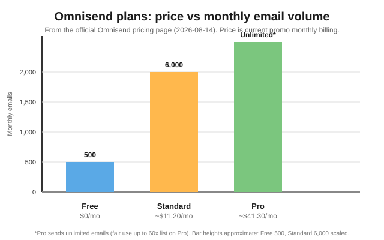

How to Automate Email Drafts with AI in 2026
The short version
TL;DR: The cleanest way to automate email drafts with AI in 2026 is to use an email marketing platform with built-in AI generation, then add a general-purpose model for the writing-heavy lifting. Omnisend is my pick to run the automation: AI forms, AI segmentation, a personalized product recommender, and a free tier at $0/mo (up to 500 emails and 250 contacts), with paid plans from roughly $11.20/mo on current promo pricing. You can have AI draft, personalize, and schedule a whole welcome or cart-abandonment series without writing each email by hand.Last updated: 2026-08-14
If you are here, you probably know AI can write a decent email. The harder question is whether you can wire that into something that drafts, sends, and improves emails on a schedule without touching every one. The answer is yes, and the pieces are more mature than a year ago.
Why automate email drafts in the first place?
Most small teams do not lack writing talent; they lack a repeatable process. When every newsletter starts from a blank drafts view, each send costs hours and the brand voice drifts. An automation pipeline does three things a human copywriter does anyway, just faster:
- It drafts from a prompt or a product data feed so you start from a scaffold, not a blank page.
- It personalizes per recipient using what you already know about them, rather than one generic message to everyone.
- It triggers on behavior (cart abandoned, order shipped, browsed without buying) so the right email fires at the right moment.
The win is not a better writer; it is removing the friction of starting, where most first-draft effort goes.
What actually works: the 5-step process
Here is the workflow I recommend, based on official pricing and product docs. It works for a two-person shop or a mid-size ecommerce brand.
- Pick your AI drafting tool. You have two options: a general-purpose chat model (ChatGPT, Claude, or Gemini) that writes and rewrites copy on demand, or a platform with AI built in that drafts inside the tool. For email that has to reach an inbox reliably and trigger on real customer behavior, I lean on the platform approach and use a general model for tone and editing.
- Set the rules before you draft. Write a short prompt that includes your audience, the offer, the goal, and a voice sample. The difference between usable drafts and unusable ones is almost always the brief. Be specific: one call to action, one offer, plain words, no hype.
- Draft inside your email platform's AI. In Omnisend, forms and segments can be built from a plain-language prompt (Forms AI and the AI Segment Builder), and the personalized product recommender pulls the right products into each email automatically. That covers two of the slowest parts of the email process without extra steps.
- Wire it to a trigger. Instead of one-off sends, connect the draft to an automation: welcome series, cart abandonment, post-purchase, win-back. Omnisend ships pre-built workflows for these. Once the email is approved, it fires on its own whenever the trigger condition is met.
- Review, measure, iterate. Automation is not "set and forget." Check the AI-generated reports and A/B test subject lines and send times. Omnisend's Reports AI surfaces insights from your send data; personalized sending time picks the best hour per contact. You keep the loop tight by refining the brief each month.

Does it save money compared with a copywriter?
Yes, in the way any template saves money: it collapses the time from brief to send. A one-off freelance newsletter can run $100 to $500. A paid email platform at current promo pricing is roughly $11 to $41 a month, less than a single freelance draft for most small lists. The tradeoff is that a human still needs to approve tone and check for errors. AI shortens drafting; it does not remove the editor.
What should I watch out for when using AI to draft email?
Four problems come up again and again.
- Hallucinated facts. If the model does not know an exact price, deadline, or product spec, it may invent one. Never let an AI-filled draft out without a human checking every claim a customer could hold you to.
- Generic voice. Models default to safe, advertisy phrasing. That is why the brief and your own voice sample matter more than the model choice.
- Deliverability, not drafting, is the real bottleneck. A great draft that lands in spam is worthless. This is the main reason to run automation through a platform that handles authentication (SPF/DKIM), list hygiene, and sending reputation rather than sending from your own inbox.
- Privacy and PII. Sending customer data to a drafting tool means knowing what that tool does with it. Keep personal data inside your email platform where it already lives, and use the general model for copy and tone only.
When is it worth skipping the platform and drafting manually?
If you send one short announcement a month to a few hundred people, an AI email platform is overkill. Use a free plan, or your normal email tool plus a chat model, and paste the copy in. Automate when you send more than a couple of times a month, have a cart-abandonment or welcome flow, or your list is big enough that personalization moves your numbers.
Do I need the latest model to automate emails?
No. For most email copy, a mid-tier model is enough. Speed-focused tiers matter if you loop hundreds of personalized drafts per send (OpenAI's Ultrafast preview, 2026-08-13, runs GPT-5.6 Sol up to 14x faster). For a typical newsletter they are irrelevant. AI drafting is becoming the default, but newer is not a reason to churn your stack.
How to pick the right email automation platform
| Tool | Entry price | AI drafting features | Best for |
|---|---|---|---|
| Omnisend | $0 free tier; ~$11.20/mo Standard (promo) | Forms AI, AI Segment Builder, Reports AI, personalized product recommender | Ecommerce email & SMS automation |
| Mailchimp | Free plan, paid tiers vary by contacts | Content generator in the email editor | General audience email |
| Klaviyo | Free tier, paid tiers scale with contacts | AI content generation, predictive analytics | Data-heavy ecommerce at scale |
| ChatGPT / Claude / Gemini | Free tiers; paid plans from about $20/mo | General copy drafting and editing | Writing drafts you paste into any tool |
When to pick Omnisend: you run a store (Shopify, BigCommerce, WooCommerce, Wix) and want email, SMS, and web push in one place, with AI building your forms, segments, and product recommendations. Plans include free migration (about 5 days), 24/7 support on all tiers, and a stated "save up to 35% vs. Klaviyo" pitch per the official pricing page.
When to pick a general chat model instead: you only need the writing, not the sending. A chat model is the cheapest full-featured writing tool and does not lock you to one platform.
Recap: your automation checklist
- Choose one drafting tool and one platform to run the automation.
- Write a specific brief with audience, offer, goal, and a voice sample.
- Draft inside the platform's AI or with a chat model, then paste.
- Connect the approved email to a trigger (welcome, cart, post-purchase).
- Set SPF/DKIM and let the platform handle deliverability.
- Review AI reports monthly, A/B test subject lines, refine the brief.
My verdict
Automating email drafts with AI is worth doing now, and the lowest-friction entry is an email platform with AI built in rather than stitching five tools together. Omnisend is the pick I would start with: a free tier for real sends, built-in AI for forms, segments, and product recommendations, free migration, and 24/7 support on every plan. Pair it with a chat model for tone editing, keep a human in the loop for facts, and you have a repeatable draft-to-send pipeline.
FAQ
Can AI really write my emails for me?
Yes, for drafting. General chat models and AI features inside email platforms (such as Omnisend's Forms AI and Reports AI) can produce complete drafts from a prompt. A human should still review for accuracy, tone, and errors before sending.
What is the cheapest way to automate email drafts with AI?
Free tiers: a free chat model for writing plus a free email platform tier. Omnisend's free plan is $0/mo for up to 500 emails and 250 contacts with no credit card on signup, per its pricing page.
Do I need paid AI for this?
No. Free chat tiers handle most email copy; paid tiers add speed and limits. Speed-focused tiers like OpenAI's Ultrafast mode (GPT-5.6 Sol at up to 14x, 2026-08-13) matter mostly for high-volume per-recipient personalization, not a normal newsletter.
Will automated AI emails hurt my deliverability?
Not by themselves. Deliverability depends on authentication (SPF/DKIM), list hygiene, and sending reputation. Running automation through a platform like Omnisend that handles these on its infrastructure is usually safer than bulk-sending from a personal inbox.
Is it safe to send customer data to AI tools?
It depends on the tool and your own policy. Keep personal customer data inside your email platform where it already lives, and use the AI for copy and tone rather than sending raw PII into a general chat model.